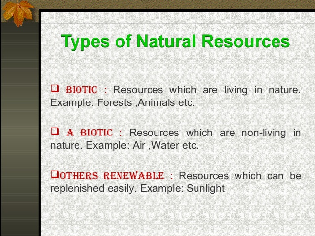

There are various methods of categorizing natural resources, these include source
of origin, stage of development, and by their renewability.
These classifications are described below. On the basis of origin,
natural resources may be divided into:
1.Biotic — Biotic resources are obtained from the biosphere
(living and organic material), such as forests and animals, and
the materials that can be obtained from them. Fossil fuels such
as coal and petroleum are also included in this category because
they are formed from decayed organic matter.
2.Abiotic – Abiotic resources are those that come from non-living,
non-organic material. Examples of abiotic resources include land,
fresh water, air and heavy metals including ores such as gold, iron,
copper, silver, etc.
Considering their stage of development, natural resources may be referred
to in the following ways:
3.Potential resources — Potential resources are those that exist in a
region and may be used in the future. For example, petroleum occurs with sedimentary rocks in various regions, but until the time it is actually drilled out and put into use, it remains a potential resource.
4.Actual resources — Actual resources are those that have been surveyed, their quantity and quality determined and are being used in present times. The development of an actual resource, such as wood processing depends upon the technology available and the cost involved.
5.Reserve resources — The part of an actual resource which can be developed profitably in the future is called a reserve resource.
6.Stock resources — Stock resources are those
that have been surveyed but cannot be used by organisms
due to lack of technology. For example: hydrogen.
Renewability is a very popular topic and many natural resources
can be categorized as either renewable or non-renewable:
7.Renewable resources — Renewable resources can be replenished naturally. Some of these resources, like sunlight, air, wind, water, etc., are continuously available and their quantity is not noticeably affected by human consumption. Though many renewable resources do not have such a rapid recovery rate, these resources are susceptible to depletion by over-use. Resources from a human use perspective are classified as renewable only so long as the rate of replenishment/recovery exceeds that of the rate of consumption.
8.Non-renewable resources – Non-renewable resources either form slowly or do not naturally form in the environment. Minerals are the most common resource included in this category. By the human perspective, resources are non-renewable when their rate of consumption exceeds the rate of replenishment/recovery; a good example of this are fossil fuels, which are in this category because their rate of formation is extremely slow (potentially millions of years), meaning they are considered non-renewable. Some resources actually naturally deplete in amount without human interference, the most notable of these being radio-active elements such as uranium, which naturally decay into heavy metals. Of these, the metallic minerals can be re-used by recycling them,[5]
but coal and petroleum cannot be recycled.[6]